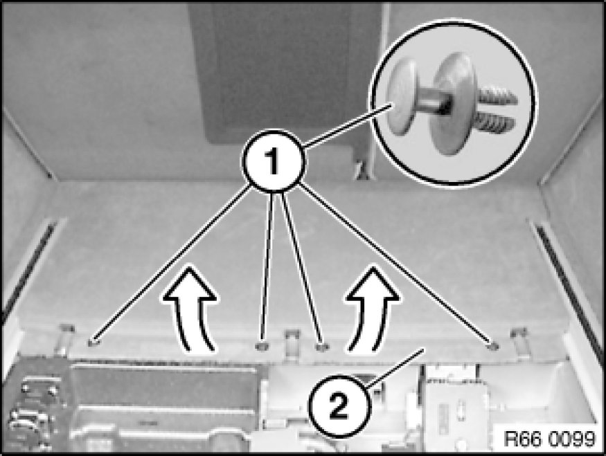
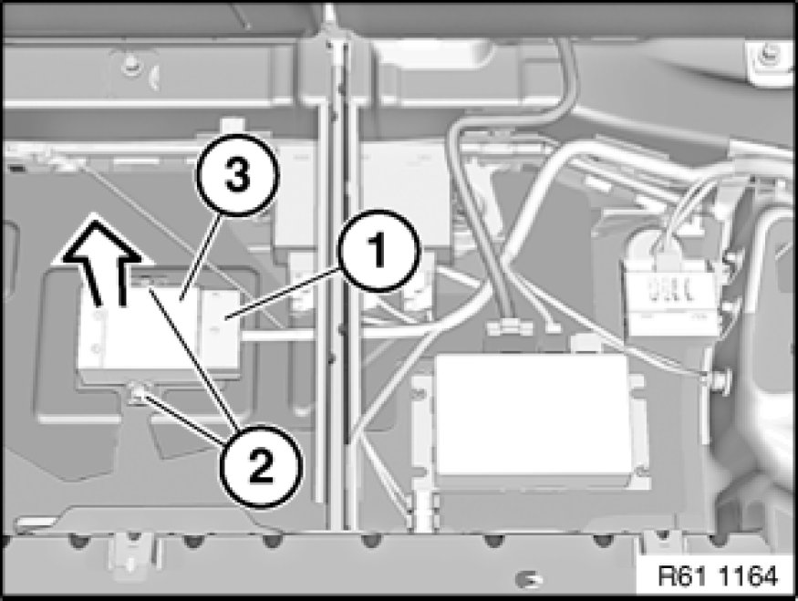

Trailer Hitch Control Module: Service and Repair
61 35 000 - Removing and installing/replacing module (for trailer two hitch)

Necessary preliminary tasks:
- Remove luggage compartment floor trim panel 51 47 101 Removing and Installing/Replacing Luggage Compartment Floor Trim Panel.

Remove clips (1) and fold up front luggage compartment floor trim panel (2) slightly.
Installation:
Make sure front luggage compartment floor trim panel (2) is correctly seated.

Note:
Front luggage compartment floor trim panel shown removed for purposes of clarity.
Unfasten plug connection (1) and disconnect.
Unscrew nuts (2).
Remove module (3) in direction of arrow.